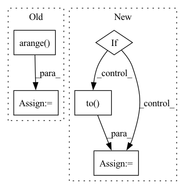

Pattern ID :25788
Before Change
test_idx = th.nonzero(test_mask, as_tuple=False).squeeze()
labels = hg.nodes[category].data.pop("labels")
// get target category id
node_ids = th.arange( g.number_of_nodes())
category_id = len(hg.ntypes)
for i, ntype in enumerate(hg.ntypes):
if ntype == category:
category_id = iAfter Change
train_idx = th.nonzero(train_mask, as_tuple=False).squeeze()
test_idx = th.nonzero(test_mask, as_tuple=False).squeeze()
if "labels" in hg.nodes[category].data:
labels = hg.nodes[category].data.pop("labels")
elif "label" in hg.nodes[category].data:
labels = hg.nodes[category].data.pop("label").to( "cpu")
else:
raise ValueError("label in not in the hg.nodes[category].data")
// // get target category id
// node_ids = th.arange(g.number_of_nodes())In pattern: SUPERPATTERN
Frequency: 3
Non-data size: 5
Instances Fragment ID: 78046864
Project Name: bupt-gamma/openhgnn
Commit Name: 53a92ea661a399ff03b8b65598ff8f3b50f2ac0f
Time: 2021-04-08
Author: theheavenszhao@outlook.com
File Name: openhgnn/utils/utils.py
M Class Name: AnonimousClass
N Class Name: AnonimousClass
M Method Name: get_idx(2)
N Method Name: get_idx(3)
M Parent Class:
N Parent Class:
M File Name: openhgnn/utils/utils.py
N File Name: openhgnn/utils/utils.py
M Start Line: 16
M End Line: 32
N Start Line: 20
N End Line: 39
Before Change
self.ndown = mol.ndown
self.nelec = self.nup+self.ndown
self.index_up = torch.arange( self.nup)
self.index_down = torch.arange(self.nup, self.nup+self.ndown)
self.orb_proj = OrbitalProjector(configs, mol)
After Change
self.orb_proj = OrbitalProjector(configs, mol)
if cuda:
self.device = torch.device("cuda")
self.orb_proj.Pup = self.orb_proj.Pup.to(self.device)
self.orb_proj.Pdown = self.orb_proj.Pdown.to( self.device)
def forward(self, MO, d2MO, dJdMO=None, d2JMO=None,
return_local_energy=False):
""" Compute the kinetic energy using the trace trick Fragment ID: 78046859
Project Name: nlesc-jcer/qmctorch
Commit Name: e3b85a877f912f7399fbe2cb38ab5ef04a2f0701
Time: 2019-12-20
Author: nicolas.gm.renaud@gmail.com
File Name: deepqmc/wavefunction/kinetic_pooling.py
M Class Name: KineticPooling
N Class Name: KineticPooling
M Method Name: __init__(4)
N Method Name: __init__(3)
M Parent Class: nn.Module
N Parent Class: nn.Module
M File Name: deepqmc/wavefunction/kinetic_pooling.py
N File Name: deepqmc/wavefunction/kinetic_pooling.py
M Start Line: 26
M End Line: 31
N Start Line: 20
N End Line: 37
Before Change
self.nup = mol.nup
self.ndown = mol.ndown
self.index_up = torch.arange( self.nup)
self.index_down = torch.arange(self.nup, self.nup+self.ndown)
self.orb_proj = OrbitalProjector(configs, mol)
After Change
self.orb_proj = OrbitalProjector(configs, mol)
if cuda:
self.device = torch.device("cuda")
self.orb_proj.Pup = self.orb_proj.Pup.to(self.device)
self.orb_proj.Pdown = self.orb_proj.Pdown.to( self.device)
def forward(self, input):
""" Compute the product of spin up/down determinants
Args: Fragment ID: 78046856
Project Name: nlesc-jcer/qmctorch
Commit Name: 9303d61fd31a69835f1c8361a88d84fe44d5eebd
Time: 2019-12-20
Author: nicolas.gm.renaud@gmail.com
File Name: deepqmc/wavefunction/slater_pooling.py
M Class Name: SlaterPooling
N Class Name: SlaterPooling
M Method Name: __init__(4)
N Method Name: __init__(3)
M Parent Class: nn.Module
N Parent Class: nn.Module
M File Name: deepqmc/wavefunction/slater_pooling.py
N File Name: deepqmc/wavefunction/slater_pooling.py
M Start Line: 52
M End Line: 56
N Start Line: 45
N End Line: 62